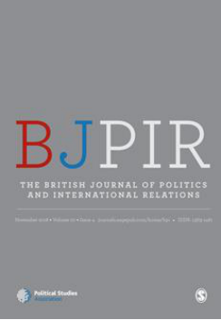

收录于合集

简 介
【原题】 Post-Brexit EU/UK securi ty cooperation: NATO, CSDP+, or “ French connection ” ?
【 作者简介 】 Benjamin Martill，伦敦大学学院(UCL)欧洲研究所的研究员，参加了达伦多夫论坛，负责学院的外展计划并努力提高英国和欧盟关系领域学术研究的公众参与度和成为政策的可能性。此外，他还与人合编了一本名为《英国退欧及未来:重新思考欧洲的未来》(Brexit and Beyond:Rethinking the Futures of Europe)的书，此书汇集了研究欧盟和国际关系的优秀学者的论文。他的研究兴趣广泛，包括国际关系、比较政治学和外交政策分析。在伦敦大学学院之前，他曾在坎特伯雷基督教堂大学(Canterbury Christ Church University)担任政治和国际关系讲师，在牛津大学瓦德姆学院(Wadham College)担任国际关系讲师，在朴茨茅斯商学院(Portsmouth Business School)担任副讲师。他于2015年获得牛津大学哲学博士学位，其论文是关于西欧安全的政党政治（研究了意识形态和党派偏见在德国、法国和英国外交政策中的作用）。他还拥有牛津大学(University of Oxford)国际关系硕士学位，以及伦敦经济学院(London School of Economics)国际关系研究硕士学位。
Monika Sus是达伦多夫论坛(Dahrendorf Forum)的博士后研究员。达伦多夫论坛是伦敦经济学院(London School of Economics)、赫蒂学院(Hertie School)和Stiftung Mercator合作的一个项目。她与80多位专家和政策制定者一道为2025年欧盟与战略伙伴和邻国的关系设想了各种情景。在此之前，她在波兰弗罗茨瓦夫大学研究中心担任助理教授，是蒙特利尔大学和匹兹堡大学加拿大人、阿勒曼德人和欧洲人研究中心的访问学者。她的研究兴趣集中在欧盟的对外政策和外交，以及前瞻性研究在政治科学中的作用。
【 文章来源 】The British Journal of Politics and International Relations，Vol 20, Issue 4, 2018
【 期刊介绍 】The British Journal of Politics and International Relations出版关于国际关系、比较政治学、公共政策、政治理论尤其是英国政治与政策的创新的前沿的学术文章，是世界上首屈一指的研究英国政治的国际期刊。

【 编译 】 杨艺华
【 审核 】褚峰熠，曲雅倩
内 容 提 要
本文的目的是了解脱欧后的英欧安全关系及其可能采取的制度形式。在回顾英国 退欧对 欧洲对外事务影响的文献的基础上，本文采用问题驱动的方法来研究关于未来 英欧安全关系的不确定性。这些问题包括英国在脱欧后对欧洲安全的承诺、脱欧后欧盟内部事态发展的性质以及欧盟是否愿意在脱欧后使英国发挥重大作用。在依次研究了上述每一个问题之后，本文考虑了三种经常被提出的英国脱欧 后制度 安排的可行性，即：英国作为第三国加入欧盟共同安全与防务政策；加强与北约的接触，使之成为英国和欧盟之间合作的主要平台 ; ****以及加强英国与欧洲主要盟国特别是法国之间的双边关系。
一、 脱欧后，英国对欧洲安全和防务的承诺将随之消失吗 ?
为了理解脱欧后英国参与欧洲安全与防务的可能性，对以下三个方面的内容进行评估是必要的。
（一） “ 全球性的英国 ” 的生存能力
在 关于脱 欧后英国外交政策的诸多讨论中， “ 全球性的英国 ” 的观点占了上风。它认为，英国会基于经济开放度、与中国等新兴大国的贸易、与英联邦国家和美国关系的重建来努力在国际关系中塑造一个新角色。 最值得注意的是，这一观点的支持者不仅限于保守党中的民族主义者，还有政府的最高层级即首相特蕾莎·梅。在2017年1月17日的兰开斯特宫演讲中，她声称要建立一个伟大的全球性贸易国家，并认为英国人民会投票离开欧盟、拥抱世界。其言论的根据在于英国参与世界的历史、在主要国际论坛上的席位（尤其是联合国安理会常任理事国席位）以及英国远胜其他国家的经济和军事能力。
********然而，这一观点却与 21 世纪的国际政治现实不符。 首先，这一观点认为英美“特殊关系”的修复能够弥补英国离开欧盟的损失，这是不可能的。地理位置限制了英国将贸易重心从欧洲转向美国，更别说美国还出于地缘政治和经济的考虑正将注意力转向亚太地区。而且，历届美国政府之所以投资英美关系，是因为英国能促进美国在欧盟的利益。其次，英国想要与中国、日本和英联邦国家等增加交往，但脱欧后的英国对这些国家没有什么吸引力。最后，英国的军事力量自20世纪60年代以来一直在衰落。现在，它的核威慑力量与美国的战略和技术紧密相连，以至于它无法将其用于全球势力的保护。
（二）英国对欧盟主导的政策、程序和操作有兴趣吗？
有迹象表明，近年来英国对于欧盟安全的承诺正在减弱，这不可避免地使人们更加怀疑 英国正对地区安全合作丧失兴趣。 英国对欧盟共同安全与防务政策（CSDP）的承诺的减弱就是一个很好的例子。尽管欧洲防务合作的最初动力来自于英法1998年的《圣马洛宣言》，但最近十年英国在政治上和军事上都没有对欧盟共同安全与防务政策进行投资。确实，因为英国没有把CSDP框架下所采取的行动看作其安全与防务政策的中心，所以它的参与是有限的。从2007年到2015年，英国投入欧盟行动的军队占比为4.33%。而就其人口规模和相较于其他欧盟国家的贡献来说，英国所投入的军队占比本应达到14.8%。并且，正如我们在下文中所讨论的那样，英国曾阻碍了欧盟在安全领域的许多举措，反而将北约和英法关系放在其安全与防务政策的优先地位。
但是，从英国参与的减少来推断英国对安全合作没有兴趣，这是错误的。 首先，就英国的对外政策而言，欧盟成员国资格的价值很大程度上在于通过CSDP来协调成员国的对外政策立场，而不是直接参与安全行动。在英国看来，欧洲协调的成就包括1982年的马岛战争、2014年对俄罗斯的制裁以及2015年伊朗核问题的解决。其次，如果脱欧正如人们所预期地导致了英国经济的衰落，那么英国将更有动力参与防务项目，因为这一部门能带来巨大的经济收益。最后，不断恶化的地区安全环境和对美国退出的担忧将推动欧洲合作的进一步加强。
（三）与欧洲合作的可行性
如果 “ 全球性的英国 ” 不可行 且合作 的强烈动力依然存在，那么在未来英国与欧洲深化合作的可能性有多大呢？我们发现，脱欧后英欧的紧密关系的最大的障碍存在于政治领域。在对英国脱欧的磋商中，双方对彼此充满了诽谤性的言论，这是由双方的国内利益所决定的。 英国精英可能会利用大量的反欧言论来增加国内对政府的支持或解释磋商过程中的不顺利。与此同时，欧盟会为了阻止脱欧的蔓延而惩罚英国并把英国描述为“捣乱分子”，因为这会促进剩余27个成员国的团结并将成员国的注意力从它们之间真正的不同引开。
然而，英欧关系可能并不是如此简单，磋商中的 言论将终究只是言论而已。 从官方角度来说，英国政府不断地强调英国将会继续与欧洲交往，并且内阁中的疑欧主义者也予以赞同。尽管高层次的政治言论是激烈的，但磋商的成果和双方的官方交流依然是热诚的。第一轮磋商过后，一些官员的言论表明特蕾莎·梅曾阻止的软脱欧比以往认为的更有可能实现。 在可预见的未来，反欧言论是否仍将是英国政治的主要动力，这一点尚不清晰。确实，在 2019 年 3 月英国正式离开欧盟之后反欧言论将会消失，这一点是有可能的。虽然支持脱欧的人厌恶欧盟，但脱 欧将使得低主权 成本的合作更令人容易接受。
**
**
二、 英国 脱欧将推动 欧洲 安全和防务一体化的发展吗？
（一） 传染性的碎片化风险
许多政治家和专家曾认为英国脱欧后欧洲会经历 “ 传染性的碎片化 ” ，因为英国 脱欧会鼓励 欧洲的民粹主义者并为其树立了脱欧的先例。 特别是特朗普在2016年美国总统大选获胜之后，人们曾密切关注2017年的法国、荷兰和德国大选以确定预期的疑欧主义和民粹主义浪潮是否会出现。 结果，预期中的欧盟解散并没有发生。英国脱 欧不仅 没有促进欧盟的瓦解，反而通过增加欧盟存在的危机感进而加强了成员国的团结。
但是，欧盟面对民粹主义的挑战却不能自满，因为其他国家走向反 欧立场 的危险仍然存在。 如果人们认为英国从退欧的磋商中获得了极大的好处，其他成员国就可能质疑欧盟成员国资格和单一市场的收益。而且中东欧国家所经历的强制转变可能出现麻烦。匈牙利和波兰可能开始质疑它们的成员国资格，尤其在它们对欧盟预算的贡献开始增加之后。
（二） 欧盟安全和防务上的推进
在英国投否决票的风险消失之后，欧盟的四个重要的安全和防务机制开始启动。 首先，欧盟军事计划与执行能力总部于2017年夏天建立并负责执行欧盟范围内的非战斗远征民事安全和军事任务；其次，永久结构性合作机制（PESCO）起步于2017年12月，允许坚定的和有能力的成员国们推动欧洲防务一体化更进一步并提出了一些合作项目；然后，欧盟委员会设立了欧洲防务基金（EDF,2020年前每年600万欧元，之后1.5亿欧元）用于技术创新、防务研究和技术采购；最后，年度协同国防审查机制（CARD）被启用以监控各国的国防开支、辨别合并资源的可能性并发展共同能力。除此之外，英国脱欧还促进了CFSP的决策机制的改变。
然而，这些发展也有自身的局限性。尽管人们期望这些项目能够提高欧盟各国武装力量协同工作的能力，但这些项目既没有挑战国家控制军队这一前提，也没有挑战 CSDP 决策机制的政府间天性，更没有形 成对北约的挑战。而且成员国之所以发展这些机制，可能只是为了满足北约提出的防务开支达到 GDP 的 2% 的目标。
（三） 权力对比状态的改变和法德轴心的恢复
英国脱欧使得英法德互相平衡的复杂三角关系消失，法德关系成为日后欧盟发展的重要变量。 新当选的法国总统马克龙是一个对欧元区改革和欧洲安全有宏伟计划的人，并且他决心要和德国一起合作来实现这些计划。他有两件优先要做的事情，一件是使法国成为欧盟的法国，另一件是通过欧元区改革和防务政策的推进来建立受到保护的欧洲。与此同时，德国正开始克服历史上的谨慎来参与国际安全事务。因此，英国脱欧后法德合作的所有条件似乎都已具备。另外，意大利和西班牙可能会起到强化法德轴心的作用，因为法国和德国经常会在PESCO协商时咨询意、西的意见。通过咨询他们的南部邻居的意见，法德使得自己的提议好像是欧盟层面共同努力的结果。
当然，复兴的法德轴心依然面临几个障碍。 首先，最大的障碍来自于德国公民不愿意使自己的国家承担更大的国际角色。在2014年，只有37%的德国公民想要使德国更加参与世界，而60%的公民不愿意使德国承担更大的国际角色；在2017年，52%的公民不希望德国参与和干预国际冲突。其次，更大的挑战在于法德关于欧洲防务未来的意见不一，而这正是PESCO协商的重点。德国的目标是让PESCO更具包容性，想让尽可能多的成员国参与进来；而法国更关注运作效率，因而致力于使PESCO更具排外性。最后，欧元区的改革等其他重要的政策领域的分歧也会影响法德关系。
三、 欧盟会愿意英国在 其安全和防务政策中承担重要角色吗？
（一） 现存的利益切合点
首先，在谈及安全和防务时，英国和欧盟有许多共同利益和优先事项。 2016年《欧盟外交与安全政策的全球战略》（EUGS）文件和2015年英国的《战略防务与安全审查》（SDSR）文件强调了双方之间共同利益的重要性。这些共同利益包括：处理恐怖主义、极端主义和不稳定，处理技术带来的影响（特别是网络威胁），制止国家威胁，快速并有效地应对风险，强化基于规则的国际秩序并应对移民、全球健康安全等全球挑战，在国内外建立适应能力（ resilience ），以及促进稳定、良治政府和人权。考虑到英欧地理上的邻近和历史上的共同，拥有共同利益不足为奇。 其次，由于英国有很强的能力，欧盟可能会对利用英国的资源来实现共同利益有兴趣。最后， 特朗普时代跨 大西洋关系的不可靠性也强化了双方的合作意愿。
****然而，有一些事情可能会阻碍欧盟同英国合作。 首先，欧盟成员国想要一个更加独立的安全行为体的想法，可能与英国想要北约作为这片大陆的安全提供者的想法相冲突；其次，欧盟可能需要在利用英国的军事装备与专业技能以及欧盟的安全保护的连贯性与决策的自主性这两个方面加以权衡；最后，英国和法国可能会争夺欧洲的军事和外交的领导权。
（二） 新机制对欧盟安全和防务的影响
欧盟最近发展的新机制对欧盟安全和防务的影响程度可能会影响欧盟让英国承担重要角色的能力和愿意程度，尤其是PESCO。PESCO的参与国已经决定，如果一国能为PESCO带来大量的附加价值并为CSDP的加强作出贡献，那么它就可以被邀请参与PESCO，但是不能参与决策程序。 这就使得英国参与 PESCO 具有可能性，而且法德也可能会出于利用英国军事能力的考虑而支持英国的参与。即使不能参与决策的局外人地位和英国公众的反对最终阻碍了英国对 PESCO 的参与，但 PESCO 本身就为英欧协 商新的安全和防务关系提供了一个平台。
但是，鉴于英国一贯反对在这一领域采取进一步的超国家举措，所以任何旨在加强欧盟安全与防务能力一体化的举措都可能阻止其参与。
（三） 相关的政治考虑
首先，出于防止脱欧蔓延的考虑，达成一份糟糕的脱 欧协议 对欧盟来说是有吸引力的；其次，波兰和波罗的海国家等中小国家可能希望英国在承担重要的角色，以免 “ 全球性的英国 ” 不再对东欧安全承担责任；最后，英国对欧盟的参与证明了英国需要欧盟而且也会提高 CSDP 运作的有效性，这对欧盟都是有益的。
**
**
四、英国脱欧后，英欧合作的可能的方式： CSDP+ 、 北约或英法合作
（一） CSDP+ ：作为第三国的英国
欧洲安全的观察家们普遍认为英国会以第三国的身份参加CSDP，因为这是一个满足双方利益需求的选择。而且，这个选择对英国的加入不构成政治上的问题，因为第三国参与机制已经是一个普遍的实践。在CSDP中，45个非欧盟成员国曾临时或在框架参与协议（FPA）的法律基础上参与欧盟的民事与军事行动。
但是，欧盟只会在达成协议之后才邀请第三方国家，这意味着非欧盟国家在哪些问题或地区能被列入议程以及欧盟的决策上没有正式的话语权。从欧盟官员的话语中，我们发现英国很可能不会有特殊待遇而只是被提供一份正常的 FPA ，这将限制英国对欧盟安全政策的完全参与。
（二）扩大在北约中的角色
因为欧盟将北约看作集体防务的框架而且英国一直致力于加强欧洲安全与北约的关系，所以未来的英欧合作很有可能发生在北约中。
但是，我们仍需注意以下几点。首先，欧盟可能更想要发展 PESCO 而不是北约；其次，欧盟和北约的功能不完全一样：北约主要是集体防务的提供者，而欧盟则重视危机管理；然后，欧盟和北约的成员国不完全相同；最后，英国脱 欧带来 的争吵可能会外溢到北约，这会进一步损害联盟的团结。
（三）重新恢复的双边关系及英法合作
英国还可以选择与重要的欧盟国家建立双边关系，其中英法关系最具可能性。 首先，当谈及国际安全时，英法有许多相似之处：两国以前都是殖民者，两国在军事能力和制度网络（institutional networks）方面有相似的收益，两国都是拥核国家，两国都可以使用全方位的军事力量，两国都是安理会常任理事国，两国都持相似的干预主义立场；其次，法国想要与其他国家以灵活的和非官僚主义的方式采取联合军事行动；最后，与法国联合不容易遭到疑欧主义者的反对，而且也更容易管理。
然而，这种选择也有自身的局限。首先，英法联合行动在外交上不如作为欧盟成员国行动有力，特别是在军事行动上没有欧盟的那种合法性；其次，英国能够用双边关系来处理与其某领域有共同关切的国家的关系，但不适用于非北约的欧盟国家；最后，对英法 合作最大 的挑战来自英法之间的竞争。法国不仅想要在欧盟中承担更大的领导角色，而且想要成为美欧关系的桥梁。所以法国可能更重视法德关系与欧盟，这使其不愿意让英法关系成为阻碍因素。
点击左下角“ 阅读原文 ”获取原文pdf版
**
**
声明
此文为国政学人微信公众平台外文编译系列文章之一，由国政学人编辑首发，不代表本平台观点。欢迎转发分享，转载请务必注明来源。如有问题，请联系guozhengxueren@163.com
更多阅读
国政学人 （ID：guozhengxueren)
为方便学人及时阅读高质量文章
别忘把国政学人设置 星标 哦~